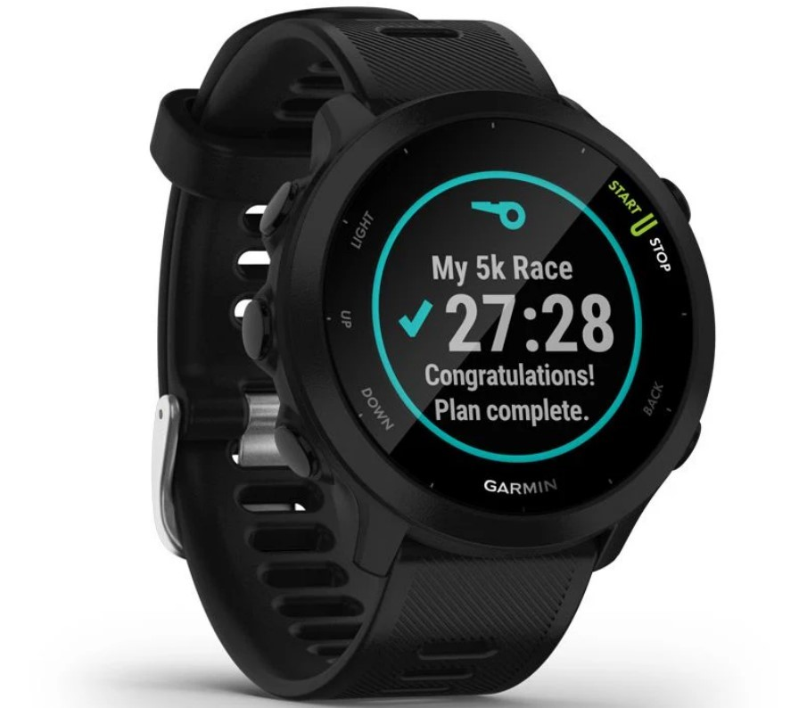

Orologio Garmin Forerunner 55

Il Garmin Forerunner 55 pesa 37 grammi, ha una cassa di 42 millimetri di diametro, schermo antiriflesso e cinturino in morbido silicone disponibile in 4 colorazioni. Impermeabile sino a 50 metri, ha un’autonomia stimata in due settimane in modalità smartwatch e in 20 ore con il GPS attivato. Oltre a tutte le funzioni orologio avanzate (compresa la segnalazione dell’orario dell’alba e del tramonto), il Garmin Forerunner 55 monitora la frequenza cardiaca direttamente dal polso ma è compatibile con tutte le più comuni fasce cardio. Il meticoloso sistema GPS si basa su tre sensori.